Front: „Ihre Grünen Engel" sitzt jetzt wie auf Ihrer Visitenkarte — eng über der Wortmarke, rechtsbündig, mit der originalen leichten Überlappung. Beide Seitenflächen tragen „Pflegedienst Monika Jansen".


Gleiche Front. Auf den Seitenflächen sitzt der originale geschwungene Schriftzug „Ihre Grünen Engel" — in der echten Schreibschrift aus Ihrer Visitenkarte, leicht schräg wie im Original.
Eigener Vorschlag des Layout-Designers: links „Pflegedienst Monika Jansen", rechts der geschwungene Schriftzug — nutzt beide Elemente Ihrer Marke und erzeugt Spannung, ohne neue Gestaltungsmittel.
| Element | Wert | Begründung |
|---|---|---|
| Logo-Breite Front | 85 % = 85,4 cm | Groß genug für 6 m Fernwirkung, aber mit Luft zum Sicherheitsbereich (4,5 cm Rand) — wirkt souverän statt gequetscht. |
| Logo-Höhe Front | Mitte auf 48,5 % statt 50 % | Die Theke steht auf dem Boden und wird leicht von oben betrachtet — die „optische Mitte" liegt ~1,5–2 cm über der geometrischen, sonst wirkt das Logo abgesackt. |
| Schriftzug Front | 38 % der Logobreite, rechtsbündig, leichte Überlappung | Exakt aus Ihrer Visitenkarte vermessen — der Schriftzug gehört optisch ZUR Wortmarke, nicht frei in die Ecke. |
| Seiten: Emblem | 14 cm ∅, 7 cm von oben | Vorher 19,5 cm — zu dominant für die schmale 30,9-cm-Fläche. 14 cm bleibt aus 2 m klar erkennbar und lässt das Panel atmen. |
| Seiten A: vertikaler Text | 3 cm Versalhöhe, +Laufweite | Lesbarkeitsregel: 1 cm Buchstabenhöhe pro 1 m Leseabstand. Vorher 2,4 cm = ab 3 m nur noch „Ornament"; 3 cm + mehr Laufweite bleibt lesbar. |
| Seiten B: Schriftzug | 80 % Panelbreite, −3,5°, auf 42 % Höhe | −3,5° folgt der natürlichen Schräge der Visitenkarte (−4° wirkte „gekippt"); 42 % statt 44 % gleicht den Weißraum oben/unten aus; 80 % hält den Sicherheitsabstand sicher ein. |
Urteil des Design-Kritikers: Front FREIGABE. Bei den Seiten klare Empfehlung für Variante B — der vertikale Text (A) ist aus über 3 m Entfernung nicht mehr lesbar, der geschwungene Schriftzug (B) transportiert die Marke auch im Vorbeigehen. Idee des Layout-Designers (optional): „www.pflegedienst-jansen.de" in 1,5 cm Höhe, 6 cm über der Front-Unterkante — Messebesucher fotografieren Stände; sagen Sie Bescheid, falls gewünscht.